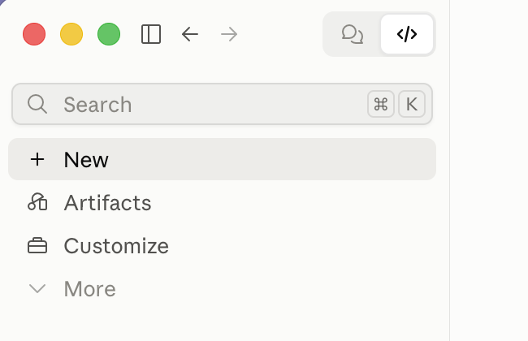
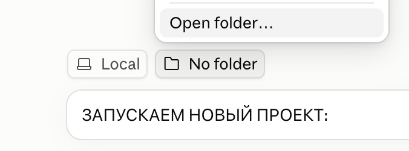

Ты вместо исполнителей. В двух образах.
Из чужого видео берутся движения, мимика, тайминг и камера, из сырых фото — лицо и фигура. Слева и справа — ты в двух образах или два разных человека. Claude ведёт по шагам и сам задаёт вопросы.

Три шага до первого вопроса
- 01
Открыть папку в Claude Code
Папка
genjutsu-kitуже проект:cd genjutsu-kit && claudeв терминале или вкладка Code в Claude Desktop — ниже. В другой проект переносится.claude/skills/genjutsu. - 02
Положить ключ fal.ai
Ключ — на fal.ai/dashboard/keys, $10 баланса хватит на 1–2 ролика.
cp .env.example .env, вставить ключ. - 03
Написать
/genjutsuИли «хочу повторить тренд». Дальше Claude спрашивает сам и перед каждой тратой показывает цену.
Запуск из приложения, без терминала
Всё делается в приложении Claude Desktop, во вкладке Code: Claude сам скачает проект, проверит программы и поведёт по шагам. Нужна подписка Pro, Max, Team или Enterprise.
Первый раз
- 01
Переключись на Code
Вверху слева, рядом со стрелками, — два значка: пузырь — Chat,
</>— Code. Нажми</>.
- 02
Выбери папку
Нажми + New. Над полем ввода две кнопки: проверь, что на первой написано Local. Нажми вторую — No folder → Open folder…. В окне выбора создай пустую папку кнопкой «Новая папка», например
Документы/Genjutsu, и нажми «Открыть».
- 03
Вставь текст в чат
Нажми «копировать» под этими карточками, вставь в чат (
Cmd+V) и отправь. Claude скачает файлы в папку и проверит программы.
Установи проект по ссылке: <ссылка на репозиторий> 1. Скачай все файлы прямо в эту папку, не в подпапку. Если git нет — скачай архив с GitHub и распакуй сюда. 2. Проверь, что есть python3, ffmpeg и yt-dlp. Чего нет — поставь сам или объясни мне простыми словами, что сделать. 3. Создай файл .env из .env.example и открой его в TextEdit, чтобы я вписал ключ fal.ai. Ключ в чат не проси. 4. Когда я напишу «готово», прочитай .claude/skills/genjutsu/SKILL.md и веди меня по нему с шага 0: вопросы по одному.
- 04
Впиши ключ
Claude откроет файл
.envв TextEdit. Впиши ключ fal.ai сразу послеFAL_KEY=, сохрани (Cmd+S) и напиши в чат «готово». Ключ — на fal.ai/dashboard/keys.
- 05
Разрешай команды
Claude спрашивает разрешение перед каждой командой — жми «разрешить». Деньги тратятся только после твоего «да» в чате, в любом режиме.


- 06
Фото — перетащи в чат
Когда Claude попросит фото, перетащи их в поле ввода и подпиши: «сырые фото — это я», «референс стиля для левого образа».

В следующий раз
Новый чат в той же папке
Вкладка Code → + New → Local → кнопка с папкой рядом → Open folder… → твоя папка Genjutsu. Недавние папки обычно видны в том же списке. Напиши обычными словами: «хочу повторить тренд» — или команду /genjutsu. Команда появляется только в новом чате после установки: в чате, где шла установка, её ещё нет, и это нормально.

Claude не понимает, о чём речь
Напиши в чат: «прочитай .claude/skills/genjutsu/SKILL.md и веди меня по нему». Если Claude не видит этот файл, значит, выбрана не та папка — начни новый чат и выбери папку Genjutsu.
Если что-то не так
Режим Chat не подходит
В обычном Chat (значок-пузырь) код выполняется в облаке: там нет твоей папки, ключа и ffmpeg. Только Code с окружением Local.

Пишет «ffmpeg: НЕТ», хотя он стоит
Закрой Claude полностью (Cmd+Q) и открой снова. Не помогло — в настройках окружения Local (шестерёнка у поля ввода) добавь в PATH папку /opt/homebrew/bin.
Генерация идёт долго
Видео считается 5–16 минут в фоне. Не закрывай приложение и не давай маку уснуть. Ход видно в панели задач: меню Views → Tasks.
Ключ случайно ушёл в чат
Удали его на fal.ai/dashboard/keys, создай новый и впиши в .env: из истории чата ключ уже не убрать.
Что он спросит и что возьмёт готовым
Один шаг — один вопрос. Перед каждым шагом Claude проверяет, что уже сделано, и предлагает переиспользовать: ключ, скачанное видео, аватары, промпт, прошлые прогоны.
Проверка и что уже есть
Ключ fal.ai
.env сам — в чате он останется в истории.Исходное видео
Кто в кадре и сырые фото
Два образа
Дальше Claude не идёт, пока оба образа не одобрены: сходство в видео держится только на них.
Кто где и формат
Промпт
Проба, потом весь кусок
Правки кусками
Итог
Утилиты, чтобы сделать руками
Только ffmpeg (и yt-dlp для ссылок). Всё, что выходит, сразу в формате галереи айфона: H.264 High 4.1, ровно 24 кадра/с, AAC 48 кГц.
| Скрипт | Что делает | Пример |
|---|---|---|
to-iphone.sh | пережимает любое видео, чтобы его приняла галерея | tools/to-iphone.sh final.mp4 |
compare.sh | сравнение «оригинал над результатом» | tools/compare.sh original.mp4 final.mp4 12 14.9 cmp.mp4 |
add-audio.sh | звук оригинала поверх результата | tools/add-audio.sh recast.mp4 original.mp4 12 14.9 final.mp4 |
contact-sheet.sh | лист кадров 4×3 и время резов | tools/contact-sheet.sh original.mp4 12 15 sheet.jpg |
download.sh | скачать с YouTube или Instagram до 1080p | tools/download.sh "<ссылка>" original.mp4 |
photo-prep.sh | HEIC → JPEG, вырезать лицо крупно | tools/photo-prep.sh IMG.heic face.jpg 560:660:20:1330 |
# весь конвейер одним скриптом (так работает Claude) G=.claude/skills/genjutsu/scripts/genjutsu.py python3 $G status # что уже сделано python3 $G fetch --url "https://www.youtube.com/watch?v=x9yop0nYR9g" --slug hotel-lobby --start 12 --duration 15 python3 $G avatar --selfie selfie.jpg --selfie face.jpg --name navy --build "about 100 kg" --outfit "navy suit" python3 $G recast --video genjutsu/hotel-lobby/original.mp4 --slug hotel-lobby --prompt-file prompt.txt \ --element A/navy/face.png,A/navy/body.png,A/navy/sheet.png \ --element A/leopard/face.png,A/leopard/body.png,A/leopard/sheet.png --start 12 --duration 6 python3 $G finish --clip genjutsu/hotel-lobby/recast-….mp4 --compare
Сколько стоит ролик на 15 секунд
| Наш путь, fal.ai | $ |
|---|---|
| Два образа (6 картинок, GPT Image 2) | 1.8 |
| Проба 6 с (Kling O3 edit) | 1.0 |
| Весь кусок 15 с | 2.5 |
| Одна правка рук, 3 с | 0.5 |
| Итого | ≈ 5.8 |
| Higgsfield Genjutsu, 15 с 720p | $ |
|---|---|
| Starter, $19/мес | 7.3 |
| Plus, $59/мес | 5.1 |
| Ultra, $129/мес | 4.5 |
| API без подписки | 5.1–10.2 |
| Правка — новый проход всего куска | ×2 |
Почему так, а не иначе
Kling, а не Seedance
Genjutsu, по всем признакам, работает на Seedance. Но на fal Seedance отклоняет фото реальных людей: «likenesses of real people». Kling O3 edit реальные лица принимает, держит одежду двух образов и смену плана.
Руки — первым приоритетом
Без отдельного абзаца в промпте Kling проводил руку сквозь лицо и путал пальцы. С абзацем «HANDS ARE THE PRIORITY…» пальцы совпали с оригиналом. Скрипт дописывает его сам.
Без кадра сцены на общем плане
Kling берёт крупность с картинки-референса: общий план превратился в средний. Без кадра сцены общий план сохранился.